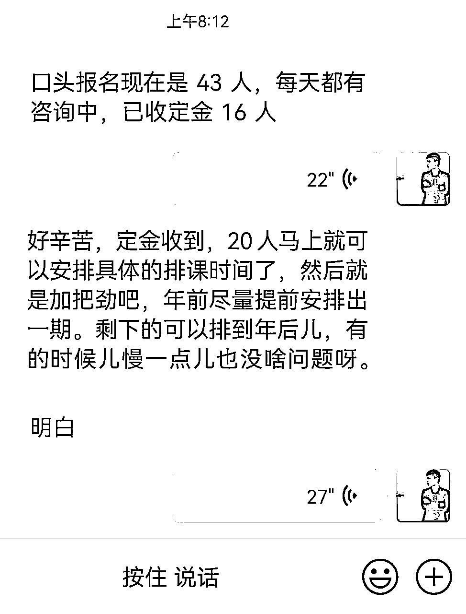
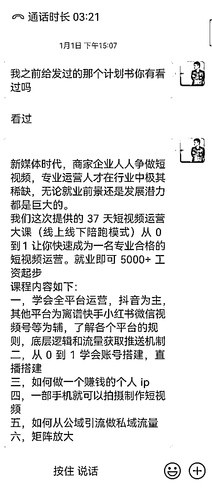
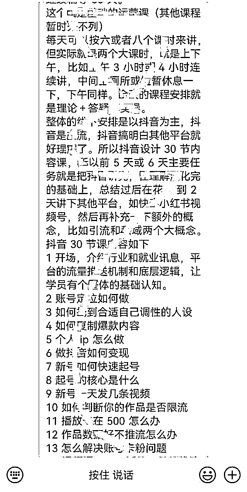

来源：https://gcgmtxu52n.feishu.cn/docx/CcGHd0sgooSMqPxKVIXcxKVnn5b
这个项目我是花了两个多月给搞下来的，刚刚算是勉强落地。所以本着分享要干信息还要早的原则，趁热乎第一时间释放价值。
目前做的是：短视频运营培训就业项目。简单的说就是培训自媒体运营，剪辑，操盘手然后向企业输送就业人才。这个跟咱们网赚创业副业的人群属性不同，是培训职场人群。
我们的培训客单定价在5000。模式就是线下七天运营大课+线上30天的后续陪跑辅导。目前口头报名43人，定金预订16人。满20人以后就可以开第一期的小课，算是刚开了个头。

为什么选定这个项目，因为我觉得它一年能做到过千万的利润，判断依据就是个人经验最主要的是同行案例。
最先了解项目是跟现实中的朋友，他不算是自媒体同行，就是做传统教培的培训机构，他们开的短视频运营班每个月能做几十万利润，因为知道我做自媒体，就约我咨询所有行业老板都关心的事，如何引流放大原有项目收益。以前从没在意过这块，了解完后感觉是闷声发大财，很感兴趣，回来后开始四处找线上做相关业务的朋友想进一步了解。幸亏多认识两个半人，朋友的朋友在做这一块业务，在一链接，原来是你小子，大家也都认识，沟通起来就简单了，把整个业务模型又给我讲了一遍，最后评估结果就是：干。
动起来就很简单了，复制，优化，摸着有结果的同行过河。
一个项目落地需要解决多个环节，产品—引流—销转—交付售后。好的项目，可以转到私域继续复购升单的还需要多个环节就是后续跟单进行二次销售。逐个打通这些点就好了。
首先引流，这块比较简单粗暴，招聘网站58boss引流，因为目前周期短样本也不够大，一些具体数据没做精准统计，而且随着后续深入，数据肯定会发生变化。所以直接说一个方便大家算账的数据就可以了，询盘成本这块，目前30左右吧，跟线上引流商业粉成本差不多，转化率过0.5。后续预估会更高。
引流渠道决定技术含量不高，所以这块不算重点了，重点就是产品加销售了。产品设计这块没有现成的东西可用，都是借鉴同行自己优化。

我这边设计的是一个线下七天+线上30天后续辅导的一个结合产品，基本就是把这个行业能覆盖的知识点，以理论加实操得培训方式培养全能性专业人才，以保证学员在实际就业中畅通无阻。
初期的产品设计三门课程，分别是短视频运营（5000）短视频剪辑（3000）项目操盘手大课（过万具体待定）因为目前只开了短视频运营培训，后续课程可能要等一期结束在上，反正这些课程可以同时开，基础课也可以升单高级课。
上面发的只是产品框架，具体是细分将近上百节小课，这个才是实战培训内容，当然这个就比较好弄了，网上有大把的具体课程借鉴，只需要花时间整理缝合一下就好了，就不需要自己绞尽脑汁的设计了

产品搞定后，就是重点销转了，这是离钱最近最重要的一个环节。销售是依托围绕产品进行，主要几个点：一是成交背书，线下线上背书重点不一样，线上靠的更多的是人设来解决信任问题，线下靠企业背书就可以，有培训机构资质，场地这些硬性条件。这些也比较好解决，资质挂靠或是找机构合作就完事。
二，主要就是话术，这块触达用户就是先电话沟通，然后意向加微信，微信约见面
无论是招生海报还是招生话术围绕的就是用户需求和痛点。成交之后就是安排排课和后续的售后和继续跟单。
以上截图都是给自己销售用的，如果有做同业务的同行可以借鉴也欢迎交流指导。
现在说下项目优势，为什么很看好。
首先教培一直是个高利润的行业，有次和朋友喝酒聊天的时候，他家很小的娃假期报一个兴趣班，15天就5000快钱，还是在我们北方五线城市。那时候就有冲动看能不能去合作一个培训班之类。现在具体列几点说下
1，引流获客确定性很强，因为做的是招聘网站引流，没有做自媒体平台那种流量不确定性，所以下限保证很稳。
2，人群属性，就业培训跟线上创业副业完全两个群体。这块是被忽视的一个消费群体，创业人群知识付费已经很卷了，但就业人群需求很大。我这边还有个数据调研，每个城市就业局都会有就业扶持培训，比如针对大学生等在就业问题，部门出费用跟对口机构合作，免费帮待就业人群做技能培训再就业。现在被问到最多的就是有没有短视频培训。
3，创业九死一生，所以教别人赚钱这事就注定交付率不会很高。相对比培训就业超高交付率，培训完几乎不愁就业，而且这个行业工资高，还缺人才，所以学员付费意愿很强，很多时候都不用过多跟他们讲，现在几乎人人都看好这个行业的就业前景，相对成交也容易。然后交付确实比线上轻很多，一个周期就一个多月，现在同样的客单线上可能都要安排个三年五年合伙人这种时长。
多说一句人才稀缺到什么程度？四五线城市招聘不到合格的普通运营，一二线城市招聘不到合格操盘手。这也是为什么你们会看到很多企业老板自己去线上各大知名博主那里报课，没办法他们找不到人才。招聘网站一打开各种高工资招人，一招招一年。
一个有趣的事，很多“聪明人”从中嗅到商机，半吊子水平去割老板韭菜，其中听说杭州是重灾区，很多老板实际不懂自媒体业务，这让一些没有职业道德的人上完速成班后，现学现卖，理论空话讲的头头是道，把老板忽悠住后一个月拿五六万的高工资。搞了几个月后水平露馅了，在打一枪换个地方，老板们被反割的苦不堪言。
4，关于变现，这个项目一共有三重收益，除了开课赚钱，还有就是基于上述所讲，往企业输送靠谱人才，企业会给你推荐返点，相当于两头赚钱。当然这块需要有对口需求企业资源，也是后续需要解决的问题之一。
还有就是任何项目变现的终点是招商，这种招商据说都是10到50万之间的代理费用，具体看所在地区。就是复制一个一模一样的短视频培训机构分公司。
同样按线上项目商业逻辑也可以矩阵，自己一个点稳定盈利后，开始直营盘把分公司开遍全国，综上所述吧，切到这个人群，可能又是一大波风口。
反正一句话总结就是，你想赚多少钱，首先是项目本身优不优质，上限有多高，这个是基本盘，其次才是商业变现模式。如果项目本身上限很低，那多牛的操盘手也拉不起来。